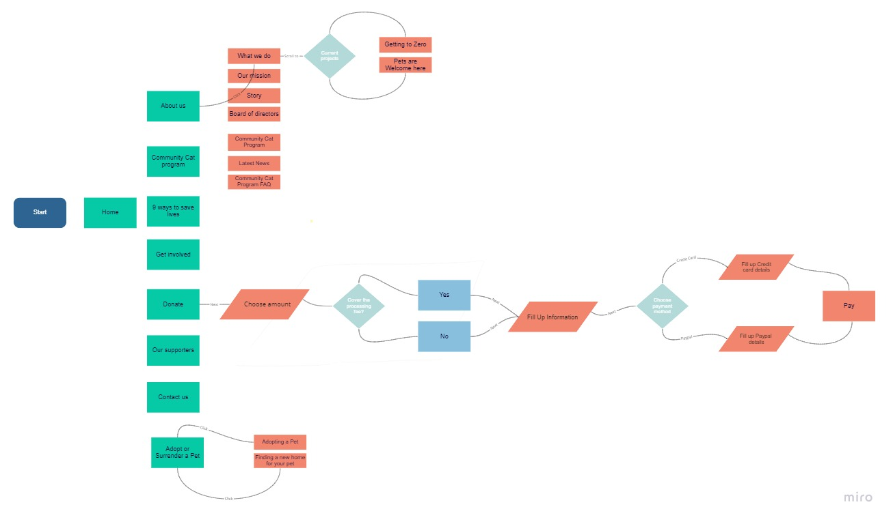

Redesign Australian
Pet Welfare
Fundation
Case Study

Project Overview
Australian Pet Welfare Foundation was designed to be a powerful platform to promote changes in policy and legislation to reduce animal euthanasia. We have observed that the current website design is not meeting this goal because of a lack of trust in the website leading to poor support for animals. How might we design the website in such a way that the present information helps users to connect with the organization to promote user retention.
| Role | UX designer User Research, Interaction, Visual design, Prototyping & Testing |
|---|---|
| Tools | Figma , Miro, Invision, Illustrator, Trello |
The Process
We conducted a research interview with 5 users and a survey, to find any pain points that users were experiencing with the actual website.
Based on the research results we started creating a serie of sketches with the features that potential customers need and want to see in the website
We tested the first prototype we created, in order to detect from user, pain points or positive feedbacks for our first attempt.
Research & Definition
User insights
The user research revealed that people were not willing support the cause because the website did not look professional or trustworthy. This was due to an outdated design and glitches in the current website, including poor organisation of the website content leading to the user feeling overwhelmed and detached to the cause.
Therefore, we believe that if the information on the website is organized in a more accessible manner with a focus on a more visually appealing design it might be able to help people feel connected to the cause.
We might do this by re-designing the information architecture of the website with a focus on the navigation and the user content. We may also choose to test a warmer colour palette for the website to make it feel more welcoming. Doing this will allow our users to easily access important information on the website leading to more people supporting the cause
Persona
Based on the user reseach, we set up our user persona, and identified realistic goals anf frustations the user might have when using the website

Ideation
We created a user flow diagram to describe all the steps users requered to complete all the tasks through the website. We focus on highlight the main services as it is Donation and adopt a pet.

Prototyping
Having our ideas in order and after many iterations on the site map, we proceeded to sketch and define the best way to show users the step by step to make a donation, adopt a pet, among other tasks that the user can perform through the website.
Ideas to be included in the redesign thanks to users recomendations
- Make main services more visible on the home page, so that it is the first thing the user sees once they navegate throught the website.
- Create a search engine option to find shelters close to users area to improve their experience when adopting a pet.
- Have a more colourful and friendly appearance for users to trust and feel more attract to visit actively the website
- Have a better distribution of the content in the homepage
- Simplify the menu content, leaving the main services first and the rest as submenus
UI style guide
Visual Design
Before to come up with the final design, we worked in some more iteration and run some A/B testing plan to make sure we were using the right design patrons for this project.
In terms of design, we based on a clean and simple concept with brigth colors and attractive pictures helping users to feel more familiar and willing to made use of the website.